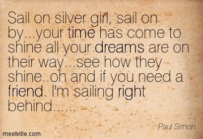

하나님은 왜 인간을 만들었을까 - Bridge Over Troubled Water 가사 해석
게시: 2019-05-16T06:30:04+09:00
제가 올해 들어 '사람은 왜 태어났고 인생에는 대체 어떤 의미가 있는가'라는 근본적인 회의감에 빠지게 되었습니다. 그 때문에 요즘은 뉴스도 거의 보지 않고, 중독된 것처럼 열심히 하던 게임도 끊고, 페북도 거의 하지 않고, 체중도 꽤 줄였습니다. 심지어 이 블로그도 접을까 하다가 마음이 정리될 때까지 그냥 당분간은 번역으로 명맥을 유지하고 있지요. 사실 인생이란 무엇이고 무슨 의미가 있는가 하는 의문은 모든 사람들이 한두번쯤, 어쩌면 평생 고민하는 문제이긴 합니다. 그래서 모든 학문의 끝판왕은 철학이고 철학을 하다보면 결국 신학으로 빠져들게 된다는 소리를 와이프가 하던데, 저도 거기에는 꽤 공감하는 편입니다. 성경에서도 삶은 참으로 허망하고 헛된 것이라고 나옵니다. (전 1:2) 전도자가 이르되 헛되고 헛되며 헛되고 헛되니 모든 것이 헛되도다 그렇게 인생의 의미를 생각하며 출근하던 어느날 아침, 매일 보던 아파트 화단의 흙을 보게 되었습니다. 그때 또 제 머리 속에 떠오르는 생각은 이런 것이었어요. "저 흙 한줌 속에도 많은 벌레들과 미생물이 가득할 것이고 그것들 하나하나가 나름대로 소중한 생명인데, 과연 그 많은 생명들에게는 무슨 의미가 있을까 ? 나의 삶이 그것들과 비교할 때 과연 조금이라도 더 나은 점이 있다고 주장할 수 있을까 ?" 거기에 대해 기독교에서는 분명히 더 나은 점이 있다고 주장합니다. 인간은 하나님의 형상을 따라 지어진 영원불멸의 영혼을 가진 존재임에 비해, 동물들은 (혼만 있고 영이 없다든가 혹은 그 반대든가) 영생도 없을 뿐더러 인간의 다스림을 받는 존재들에 불과하다는 것이지요. 기독교인들이 천지창조에 대해서 빅뱅 이론은 비교적 순순히 '하나님의 기적'이라며 받아들이지만, 유독 다윈의 진화론에 대해서는 격렬하게 반대하는 이유가 바로 그것이더라고요. 제 짧은 생각으로는 돌연변이에 의해 새로운 종의 탄생이 가능하도록 DNA를 coding하신 것이 하나님이라고 생각한다면 진화론이라는 것이 굳이 신의 존재를 부정하는 것이 아닙니다. 그런데, 인간만이 특별한 존재이고 오로지 인간에게만 영혼이 있다고 주장하는 입장에서는 진화론을 받아들이기가 쉽지 않겠지요. 그런 점에서 불교는 입장이 꽤 다릅니다. 불경을 읽은 것이 아니라서 원전을 인용하기는 그렇습니다만... (저는 이 이야기를 신필 김용 선생의 '사조영웅전'에서 읽었습니다) 아래의 불교 설화가 인간과 동물의 생명에 대한 관점을 잘 보여줍니다. "어느 왕자가 창가에 앉아 있었다. 느닷없이 비둘기 한마리가 날아와 왕자의 품 안으로 파고 들었고, 그 뒤를 쫓아 매 한마리가 나타났다. 매는 왕자에게 그 비둘기를 내놓을 것을 요구했는데, 왕자는 비둘기의 생명을 보호하기 위해 거절했다. 그러자 매는 '그 비둘기를 당장 먹지 못하면 내가 굶어죽는다. 비둘기의 생명만 소중한가 ? 나의 생명도 소중하지 않은가 ?' 라고 말했다. 그 말도 일리가 있다고 생각한 왕자는 고민을 하다가 이렇게 제안했다. '비둘기의 무게만큼 나의 살점을 떼어줄테니 그것을 먹고 대신 비둘기를 살려달라.' 그래서 정말 저울을 가져놓고 한쪽 접시에는 비둘기를 올려놓고, 다른쪽 접시에는 왕자의 살점을 조금씩 잘라 올려놓기 시작했는데, 팔과 다리, 가슴에서 아무리 살점을 많이 떼어 올려놓아도 저울은 비둘기 쪽으로 기운 채 도통 올라오지 않았다..." 사조영웅전에는 여기까지만 나오고 이 이야기의 끝이 어떻게 끝나는지는 알려주지 않습니다. 그러나 여기까지만 읽어도, 불교에서는 인간을 포함한 모든 생명의 무게는 동일하다고 본다는 것을 알 수 있습니다. 저는 개인적으로 인간에게만 영혼이 있고 인간만 특별하다고 생각하지는 않습니다. 개와 몇 분만 눈동자를 마주 보며 앉아있어도 개나 사람이나 똑같이 희노애락을 가진다는 것을 알 수 있거든요. 물론 우리는 인간이니까, 인간끼리 서로 좀 더 소중하게 여겨야 한다고 생각합니다. 이렇게 허망한 삶에 대해서 고민하던 중, 최근 제가 고등학교 때 정말 좋아했던 Simon & Garfunkel의 "Bridge over Troubled Water"라는 노래를 다시 듣게 되었습니다. 뭔가 울컥하는 것이 있더라고요. 저는 노래에서 가사를 꽤 중요하게 보는 편인데, 이 노래의 가사는 특히 뭔가 어려움에 처하거나 낙심한 사람들에게 정말 위안에 되는 노래입니다. 삶이 그렇게 덧없고 헛된 것이라고 할지라도, 누군가 정말 아무 조건없이 나를 도와준다고 생각하면 살아갈 힘이 되지 않나 싶습니다. 또 만약 제가 다른 사람에게 도움을 줄 수 있다면 그것도 도움을 받는 것 못지 않게 정말 큰 삶의 의미가 되지 않을까 싶어요. 저는 항상 하나님은 왜 자력으로 살 수 있는 식물까지만 만드시지 않고, 꼭 다른 동물이나 식물의 생명을 해쳐야만 살아갈 수 있는 동물도 만드셨을까 하고 궁금해했습니다. 어쩌면 하나님은 인간들이 서로 돕고 사는 모습을 보고 싶어서 인간을 만드신 것일지도 모르겠어요. 생각해보면 예수님께서 새로운 계명이라고 내려주신 것이, 바로 서로를 사랑하라는 단순한 것이었지요. (요 13:34) 새 계명을 너희에게 주노니 서로 사랑하라 내가 너희를 사랑한 것 같이 너희도 서로 사랑하라
실제로 이 노래는 폴 사이먼이 복음성가에서 영감을 받아 작사작곡한 곡이고, 제목도 다른 복음가수의 노래 가사에서 따온 것입니다. 이 노래는 전반부는 어려움에 처한 사람을 위로하는 내용이고, 후반부는 마침내 그 사람의 상황이 잘 풀려 순풍에 돛을 단 듯 좋은 상황이 되는 그런 희망적인 구조로 되어 있습니다. 제가 이 노래 들으면서 울컥했던 부분은 (항상 그렇지만) 전체 노래의 80% 정도가 지난 부분에서 나오는 아래 부분이에요.
Oh, if you need a friend I'm sailing right behind
그러니까, 이 노래를 부르는 사람은 silver girl이 고난에 처했을 때는 몸을 던져 silver girl을 돕는데, 이 silver girl이 이제 제자리를 잡고 잘 나갈 때에도 굳이 나서지 않고 옆이 아니라 뒤에서 묵묵히 따라가기만 합니다. 혹시 silver girl에게 도움이 필요할 경우가 또 생길 것에 대비해서요. 그야말로 아무 조건이 붙지 않은 도움을 주는 경우인 것입니다. 사람들은 자기에게 친구가 많다고 자랑하지만, 대부분의 관계는 give & take의 관계에 불과합니다. 정말 아무런 조건 없이 일방적으로 아끼고 돕는 관계는 흔치 않습니다. 부모가 자식을 보는 관계, 그리고 신이 인간을 보는 관계 정도지요. 그래서 이 노래의 가사가 복음성가적이라는 이야기가 나오는 것입니다.
저는 고등학교 떄 저 노래에서 'Sail on silver girl' 이라는 부분이 참 인상적이었어요. 은빛으로 빛나는 여자가 키를 잡고 석양이 지는 바다를 항해하는 모습이 굉장히 멋있고 낭만적으로 들렸거든요. 그런데 뭐든 마약과 연관지어 생각하기를 좋아하는 미국인들은 저 'silver girl'이라는 부분에 대해 헤로인 주사 바늘을 뜻하는 것이라고 해석하기도 했답니다. 그러나 실제로는 물론 그렇지 않았고, 당시 폴 사이먼와 막 결혼했던 Peggy Harper가 그때 즈음 머리칼에서 첫번째 흰머리를 발견하고 약간 우울해 했던 것을 위로하기 위해 삽입된 것이라고 합니다. 가장 우스운 부분은 이 노래 전체는 언제나 그렇듯이 폴 사이먼이 작사 작곡을 다 알아서 한 것인데, 이 'Sail on silver girl' 부분만은 아트 가펑클이 아이디어를 낸 것이고, 정작 폴 사이먼은 이 부분을 별로 마음에 들어하지 않았다는 것입니다.

사이먼 & 가펑클의 노래들은 모두 폴 사이먼이 작사작곡한 것이지만, 이 노래 Bridge over Troubled Water는 가펑클이 솔로로 불렀기 때문에 많은 사람들이 막연히 이 노래는 가펑클의 작사작곡이라고 생각했다고 합니다. 그들의 최대 히트곡인 이 노래를 가펑클이 웅장한 피날레와 함께 부르고나면 청중들이 기립 박수를 치며 환호하곤 했는데, 이 노래에서 맡은 파트가 없었기 때문에 (피아노도 다른 사람이 연주함...) 한쪽에 찌그러져 있던 폴 사이먼은 속으로 '이봐들, 그건 내 노래인데 !' 라며 질투를 느끼곤 했다네요.
Bridge Over Troubled Water라는 제목은 보통 '험한 세상 다리가 되어' 라고 번역되었는데, 사실 그 번역이 더 좋긴 합니다만 여기서는 그냥 원문에 충실하게 강물이라고 번역했습니다.

이 노래 감상은 아래 유튜브에서 하세요. https://youtu.be/4G-YQA_bsOU Bridge Over Troubled Water
험한 강물 너머 다리가 되어 When you're weary, feeling small When tears are in your eyes,
I'll dry them all (all) 당신이 지치고 하찮게 느껴질때 눈물이 흘러넘치면
내가 닦아줄게요 I'm on your side, oh,
when times get rough And friends just can't be found 난 당신 편이에요
거친 시절이 찾아와 친구들이 다 사라졌을 때에도 Like a bridge over troubled water I will lay me down Like a bridge over troubled water I will lay me down 험한 강물 위 다리처럼 나를 밟고 가면 돼요 When you're down and out When you're on the street 당신이 낙심하고 좌절할 때 당신이 거리에 내몰렸을 때 When evening falls so hard I will comfort you (ooo) 저녁이 너무 힘겹게 느껴질 때 내가 당신을 위로해줄게요 I'll take your part, oh,
when darkness comes And pain is all around 내가 당신 몫을 맡아줄게요
어둠이 찾아오고 사방이 고통 뿐이라고 해도 Like a bridge over troubled water I will lay me down Like a bridge over troubled water I will lay me down 험한 강물 위 다리처럼 나를 밟고 가면 돼요 Sail on silver girl Sail on by 은빛 그대여 돛을 올려요 거침없이 나아가세요 Your time has come to shine All your dreams are on their way See how they shine 이제 당신이 빛날 때가 왔어요 계획대로 나아가는 당신의 모든 꿈들이 얼마나 빛나고 있는지 보세요 Oh, if you need a friend I'm sailing right behind 혹시 당신에게 친구가 필요하다면 내가 당신 바로 뒤에 따라가고 있어요 Like a bridge over troubled water I will ease your mind Like a bridge over troubled water I will ease your mind 험한 강물 위 다리처럼 제가 당신에게 위안이 될게요 작사: Paul Simon